Iconos de la carta
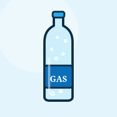
agua con gas 50 cl
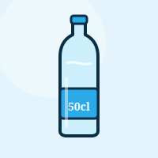
agua mineral 50 cl
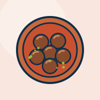
albondigas caseras en salsa
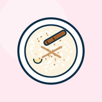
arroz con leche
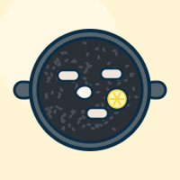
arroz negro con alioli
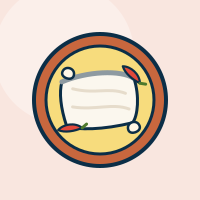
bacalao al pil pil
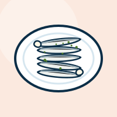
boquerones en vinagre
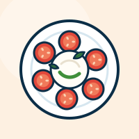
burrata con tomate y pesto
cafe con leche
cafe solo
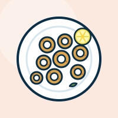
calamares a la andaluza
cana de cerveza
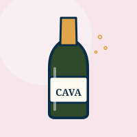
cava brut nature botella
cerveza artesana ipa
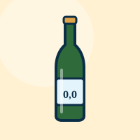
cerveza sin alcohol
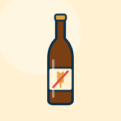
cerveza sin gluten
cerveza tostada
clara con limon
copa de vino blanco de la casa
copa de vino tinto de la casa
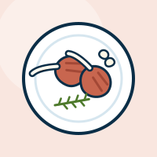
cordero asado al romero
crema catalana
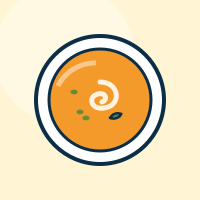
crema de calabaza
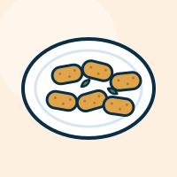
croquetas caseras de jamon 6 uds
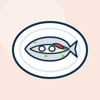
dorada a la espalda
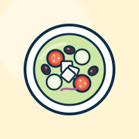
ensalada griega
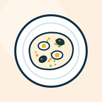
ensaladilla rusa
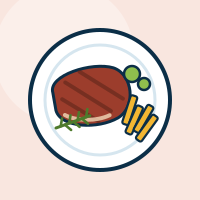
entrecot de vaca a la brasa
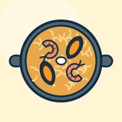
fideua de marisco
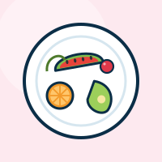
fruta de temporada
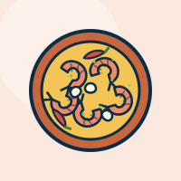
gambas al ajillo
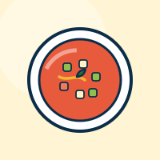
gazpacho andaluz
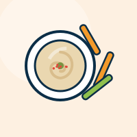
hummus con crudites
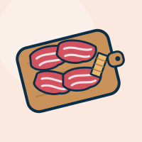
jamon iberico de bellota
jarra de cerveza
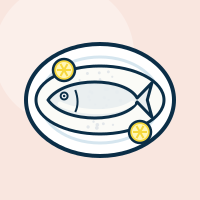
lubina a la sal
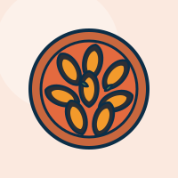
mejillones a la marinera
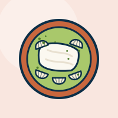
merluza en salsa verde con almejas
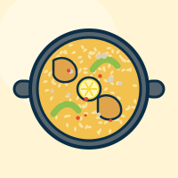
paella valenciana
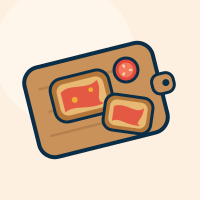
pan con tomate y aceite
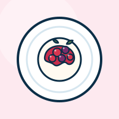
panna cotta con frutos rojos
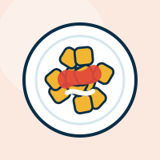
patatas bravas
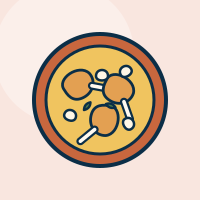
pollo de corral al ajillo
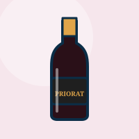
priorat tinto botella
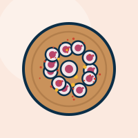
pulpo a la gallega
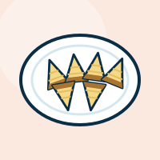
queso manchego curado
refresco de cola
refresco de limon
refresco de naranja
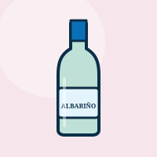
rias baixas albarino botella
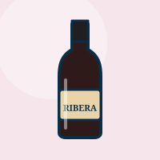
ribera del duero roble botella
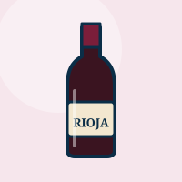
rioja crianza botella
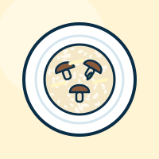
risotto de setas y parmesano
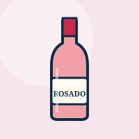
rosado de navarra botella
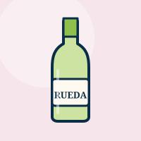
rueda verdejo botella
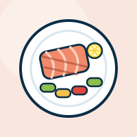
salmon a la plancha con verduras
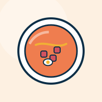
salmorejo cordobes
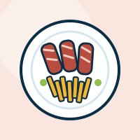
secreto iberico con patatas
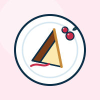
tarta de queso al horno
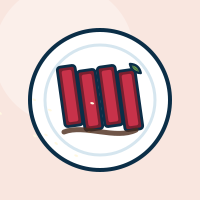
tataki de atun rojo con sesamo
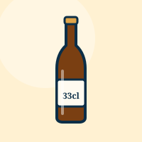
tercio de cerveza
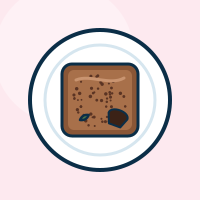
tiramisu
tonica
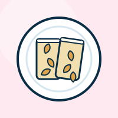
turron de almendra casero
yogur griego con miel y nueces
zumo de naranja natural